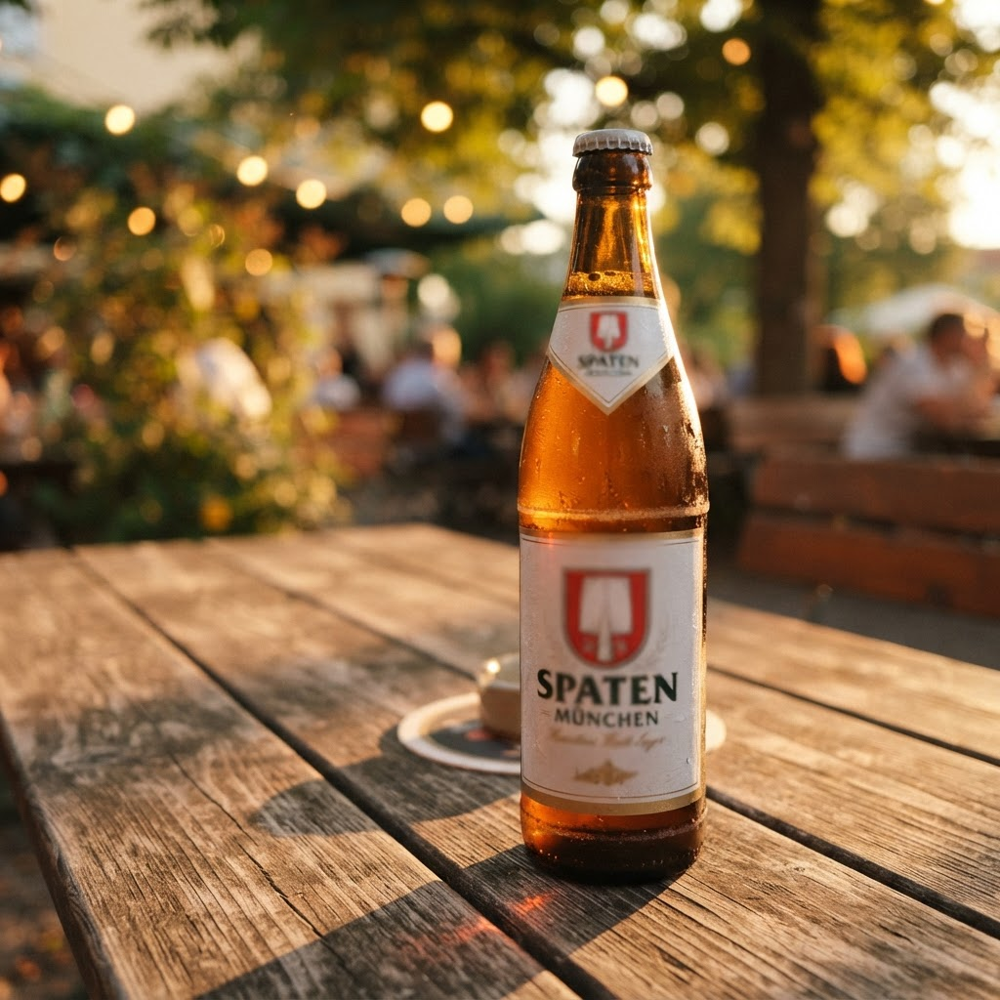
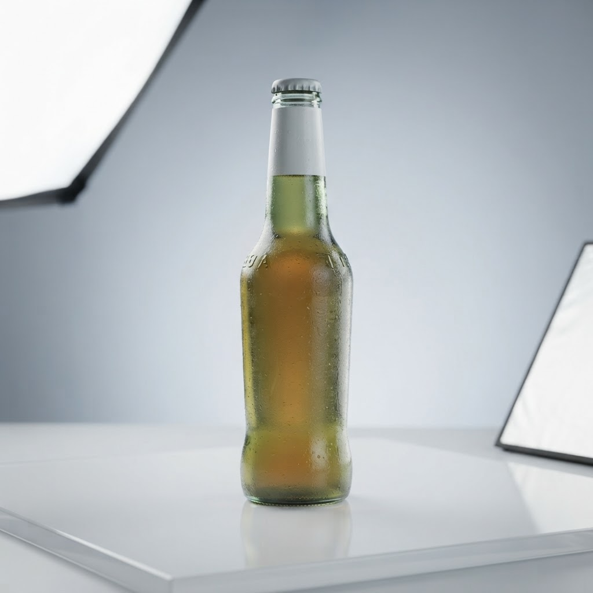

Сколько стоит где заказать пиво с доставкой спб в Приморском районе

Янино активно развивается, и запрос на качественный сервис здесь растет пропорционально застройке. Многие жители задаются вопросом, где заказать пиво с доставкой спб в Приморском районе, учитывая удаленность локаций и необходимость оперативного обслуживания в ночное время.
Стоимость и логистика услуги где заказать пиво с доставкой спб в Приморском районе
Анализ рынка показывает, что ключевым фактором выбора службы является время ожидания. Мы фокусируемся на доставке в течение одного часа, что требует безупречной логистики и плотной сети курьеров. Самостоятельный выбор поставщика часто приводит к разочарованиям из-за нарушения температурного режима или задержек. Чтобы оптимизировать процесс, необходимо ориентироваться на специализированные сервисы, имеющие лицензированные склады в зоне покрытия. Оценка стоимости формируется исходя из удаленности точки, времени суток и объема заказа. Важно проверять наличие разрешительной документации у поставщика, так как работа в ночное время требует соблюдения строгих правовых норм. Экспертный подход подразумевает исключение случайных посредников и выбор компаний с собственным автопарком, что минимизирует риск порчи продукта при транспортировке.
Практические аспекты где заказать пиво с доставкой спб в Приморском районе
При поиске надежного исполнителя следует придерживаться четкого алгоритма проверки. Во-первых, уточните фактическую возможность приезда курьера в ночное время. Многие сервисы лишь имитируют круглосуточную работу, на деле закрывая прием заявок задолго до полуночи. Наша методика предполагает строгое соблюдение часового интервала доставки вне зависимости от дорожной обстановки. Во-вторых, оцените ассортиментную матрицу. Качественный поставщик всегда гарантирует правильные условия хранения и транспортировки напитков. При самостоятельном заказе обращайте внимание на полноту предоставленной информации о продукции: состав, срок годности и сертификаты качества должны быть доступны по первому требованию. Исключайте сервисы, работающие без фискальных чеков, так как это прямое свидетельство нарушения законодательства и отсутствия гарантий безопасности для потребителя. Профессиональная доставка всегда сопровождается прозрачной отчетностью и предсказуемым временем прибытия.
Почему время доставки часто превышает обещанный час?
Основными причинами задержек являются неграмотное распределение зон покрытия и высокая нагрузка на курьеров в ночные часы. Профессиональные службы решают эту проблему за счет использования точных алгоритмов маршрутизации и удержания достаточного штата сотрудников в каждом конкретном секторе города.
Итог
Итог всегда один: назвать следующий шаг покупателю — оформить заказ и получить его в течение часа в своём районе.
Заказать доставку
Оформите заказ сейчас: привезём за 40-60 минут в любой район Петербурга, круглосуточно.
Призыв
Доставка пива алкогольного спб с доставкой в Приморском районеЯнино стремительно застраивается, однако потребность в качественном сервисе остается высокой. Ночная доставка пива алкогольного спб становится приоритетной з…Доставка водки сейчас спб с доставкой в Приморском районеЖители Янино часто сталкиваются с дефицитом алкогольной продукции в ночное время, когда розничные сети закрыты. Наша служба решает проблему, организуя операт…Сколько стоит купить водку в спб с доставкой сейчас в Приморском районеЯнино активно развивается, и потребность в качественном сервисе здесь растет пропорционально количеству жилых комплексов. Когда возникает необходимость купит… Сколько стоит где купить пиво в спб с доставкой в Приморском районеЯнино активно застраивается, но инфраструктура не всегда успевает за потребностями жителей, особенно в ночное время. Доставка напитков на дом становится един…
Сколько стоит где купить пиво в спб с доставкой в Приморском районеЯнино активно застраивается, но инфраструктура не всегда успевает за потребностями жителей, особенно в ночное время. Доставка напитков на дом становится един…